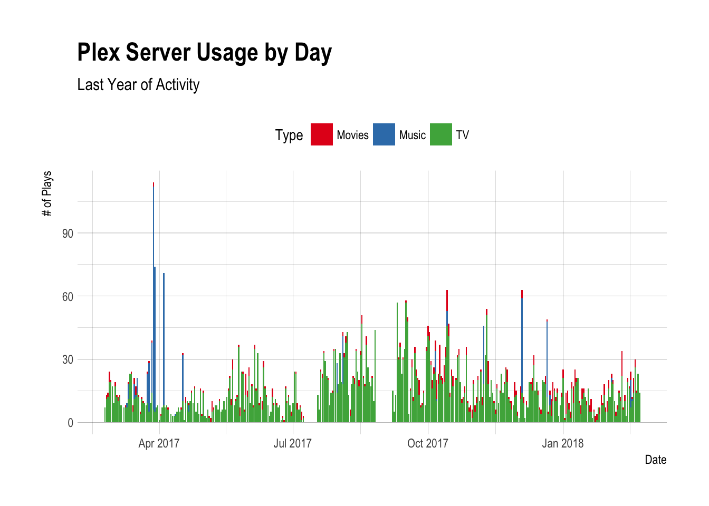

library(tauturri)
library(knitr) # kable()
library(dplyr)
library(magrittr)
library(tidyr)
history <- get_plays_by_date(time_range = 365)
history %>%
head %>%
kable()| date | TV | Movies | Music |
|---|---|---|---|
| 2017-02-23 | 7 | 0 | 0 |
| 2017-02-24 | 11 | 2 | 0 |
| 2017-02-25 | 12 | 2 | 0 |
| 2017-02-26 | 19 | 5 | 0 |
| 2017-02-27 | 19 | 1 | 0 |
| 2017-02-28 | 17 | 0 | 0 |
So far so good.
history %<>%
gather(Type, Plays, -date)
history %>%
head %>%
kable()| date | Type | Plays |
|---|---|---|
| 2017-02-23 | TV | 7 |
| 2017-02-24 | TV | 11 |
| 2017-02-25 | TV | 12 |
| 2017-02-26 | TV | 19 |
| 2017-02-27 | TV | 19 |
| 2017-02-28 | TV | 17 |
Better.
library(ggplot2)
library(hrbrthemes)
ggplot(data = history, aes(x = date, y = Plays, fill = Type)) +
geom_col() +
scale_fill_brewer(palette = "Set1") +
theme_ipsum() +
theme(legend.position = "top") +
labs(title = "Plex Server Usage by Day",
subtitle = "Last Year of Activity",
y = "# of Plays", x = "Date")
Neat.
history %>%
group_by(date) %>%
mutate(total = sum(Plays),
perc = Plays / total) %>%
ggplot(aes(x = date, y = perc, fill = Type)) +
geom_col(width = 1) +
scale_y_percent() +
scale_fill_brewer(palette = "Set1") +
theme_ipsum() +
theme(legend.position = "top") +
labs(title = "Plex Server Usage by Day and Media Type",
subtitle = "Last Year of Activity",
y = "% of Plays", x = "Date")
#> Warning: Removed 69 rows containing missing values (position_stack).Oh, I accidentally built an area chart with bars.
Whoops.
history_hours <- get_plays_by_hourofday(time_range = 365) %>%
gather(Type, Plays, -hour) %>%
mutate(hour = hms::hms(hours = hour))
ggplot(data = history_hours, aes(x = hour, y = Plays, fill = Type)) +
geom_col() +
scale_fill_brewer(palette = "Set1") +
theme_ipsum() +
theme(legend.position = "top") +
labs(title = "Plex Server Usage by Time of Day",
subtitle = "Last Year of Activity",
y = "# of Plays", x = "Hour")history_users <- get_plays_by_top_10_users(time_range = 365) %>%
gather(Type, Plays, -user)
ggplot(data = history_users, aes(x = reorder(user, Plays), y = Plays, fill = Type)) +
geom_col() +
coord_flip() +
scale_x_discrete(labels = sample(words, nrow(history_users))) +
scale_fill_brewer(palette = "Set1") +
theme_ipsum() +
theme(legend.position = "top") +
labs(title = "Plex Server Usage by User",
subtitle = "Last Year of Activity",
y = "# of Plays", x = "User")